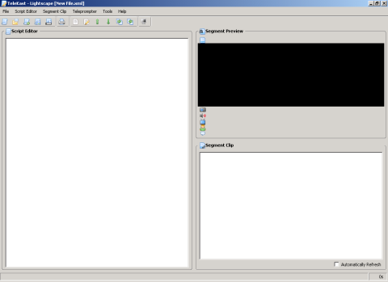

Main Screen
This image shows the main screen:

From this screen you can edit your script, preview a segment and move commonly used segments to the Segment Clip. When you click on a segment, whether in the Script Editor or Segment Clip, it will show in the Segment Preview section.